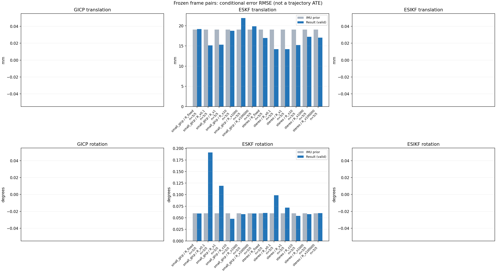

20261015_112940_pitch_up · depth=disparity_cache · cache=26319ef17351bf5fd9bb
模型视差：/home/ubuntu22/slam/SIO_SLAM/models/tensorrt/disp_896x448_fp16.plan；engine SHA256=604cf6ac1f705c877260711730dd5d2d58c2a21f3020c03c668401ef7fb1e768。输入为生产裁剪与光照处理后的 RGB 0..255；此实验使用原始浮点像素视差，不应用完整前端的邻域视差后处理。
原始 ONNX SHA256：e9f49736a65d68d06681add463866b6defdf78fdd7f4f50f6cc941b682fdc0bc。
代价体图改写验证：ONNX Runtime 固定随机特征输入，最大绝对误差 0；该项检查图改写，完整模型精度仍需由录制数据评估。
配准代码版本：744ac2d993ae629b0cc44a3b1d995e04ab4fad48；观测生成版本：744ac2d993ae629b0cc44a3b1d995e04ab4fad48。
固定图像对与纯 IMU 先验；ESKF 回放固定 GICP 观测，ESIKF 直接读取点云。真值只用于此报告。
同时查看 converged 与 solver_status：上游默认 Stereo 在 max_iter / stopped_at_minimum 时也可能置 converged=true。valid 表示输入检查通过，不表示精度提升。欧氏 GICP 未提供独立的点距 RMSE，该列显示 NaN。
误差按每对图像的锚点计算，单位 m / degrees。此处 RMSE 不是全序列 ATE；末帧受同一锚点条件约束。NIS 与条件马氏距离是诊断量，少量相关图像对不能用于宣称协方差已校准。
全部指标 CSV · R / P / K 矩阵 CSV · Stereo 求解逐轮 CSV · ESIKF 逐轮 CSV · 配置快照 · 矢量图
| stage | method | variant | valid | total | translation RMSE (m) | rotation RMSE (deg) |
|---|---|---|---|---|---|---|
| eskf | small_gicp | R_fixed | 5 | 5 | 0.019181 | 0.059157 |
| eskf | small_gicp | R_x0.1 | 5 | 5 | 0.015131 | 0.19133 |
| eskf | small_gicp | R_x1 | 5 | 5 | 0.015299 | 0.11898 |
| eskf | small_gicp | R_x10 | 5 | 5 | 0.01878 | 0.047827 |
| eskf | small_gicp | R_x1000 | 5 | 5 | 0.021911 | 0.057883 |
| eskf | small_gicp | R_x100000 | 5 | 5 | 0.019884 | 0.05921 |
| eskf | stereo | R_fixed | 5 | 5 | 0.01698 | 0.060332 |
| eskf | stereo | R_x0.1 | 5 | 5 | 0.014213 | 0.098679 |
| eskf | stereo | R_x1 | 5 | 5 | 0.014206 | 0.072111 |
| eskf | stereo | R_x10 | 5 | 5 | 0.015212 | 0.054091 |
| eskf | stereo | R_x1000 | 5 | 5 | 0.017263 | 0.057928 |
| eskf | stereo | R_x100000 | 5 | 5 | 0.017079 | 0.059921 |

| stage | case | method | variant | status | solver_status | inliers | converged | covariance_convention | covariance_from_hessian | fitness | registration_rmse_m | prior_trans_error_m | result_trans_error_m | prior_rot_error_deg | result_rot_error_deg | R_rot_trace_rad2 | R_pos_trace_m2 | nis_regularized |
|---|---|---|---|---|---|---|---|---|---|---|---|---|---|---|---|---|---|---|
| eskf | static_start | small_gicp | R_x0.1 | updated | 6420 | 1 | right_source_body | 1 | 0.8934 | nan | 0.00012006 | 0.0042612 | 0.0069246 | 0.17227 | 1.0124e-06 | 4.4627e-06 | 64.101 | |
| eskf | static_start | small_gicp | R_x1 | updated | 6420 | 1 | right_source_body | 1 | 0.8934 | nan | 0.00012006 | 0.0020448 | 0.0069246 | 0.066534 | 1.0124e-05 | 4.4627e-05 | 11.756 | |
| eskf | static_start | small_gicp | R_x10 | updated | 6420 | 1 | right_source_body | 1 | 0.8934 | nan | 0.00012006 | 0.00071488 | 0.0069246 | 0.01796 | 0.00010124 | 0.00044627 | 1.5241 | |
| eskf | static_start | small_gicp | R_x1000 | updated | 6420 | 1 | right_source_body | 1 | 0.8934 | nan | 0.00012006 | 0.00012068 | 0.0069246 | 0.0068039 | 0.010124 | 0.044627 | 0.016919 | |
| eskf | static_start | small_gicp | R_x100000 | updated | 6420 | 1 | right_source_body | 1 | 0.8934 | nan | 0.00012006 | 0.00012006 | 0.0069246 | 0.0069233 | 1.0124 | 4.4627 | 0.00016944 | |
| eskf | static_start | small_gicp | R_fixed | updated | 6420 | 1 | right_source_body | 1 | 0.8934 | nan | 0.00012006 | 0.00013352 | 0.0069246 | 0.0079411 | 0.00022846 | 0.0012 | 0.57467 | |
| eskf | static_start | stereo | R_x0.1 | updated | max_iter | 5155 | 1 | left_target_body | 1 | 0.71957 | 0.091501 | 0.00012006 | 0.00097862 | 0.0069246 | 0.021695 | 2.2232e-09 | 1.2647e-08 | 1.2506 |
| eskf | static_start | stereo | R_x1 | updated | max_iter | 5155 | 1 | left_target_body | 1 | 0.71957 | 0.091501 | 0.00012006 | 0.00093871 | 0.0069246 | 0.021172 | 2.2232e-08 | 1.2647e-07 | 1.1855 |
| eskf | static_start | stereo | R_x10 | updated | max_iter | 5155 | 1 | left_target_body | 1 | 0.71957 | 0.091501 | 0.00012006 | 0.00070654 | 0.0069246 | 0.018103 | 2.2232e-07 | 1.2647e-06 | 0.78872 |
| eskf | static_start | stereo | R_x1000 | updated | max_iter | 5155 | 1 | left_target_body | 1 | 0.71957 | 0.091501 | 0.00012006 | 0.00014531 | 0.0069246 | 0.0063337 | 2.2232e-05 | 0.00012647 | 0.029731 |
| eskf | static_start | stereo | R_x100000 | updated | max_iter | 5155 | 1 | left_target_body | 1 | 0.71957 | 0.091501 | 0.00012006 | 0.00011995 | 0.0069246 | 0.0069008 | 0.0022232 | 0.012647 | 0.00034166 |
| eskf | static_start | stereo | R_fixed | updated | max_iter | 5155 | 1 | left_target_body | 1 | 0.71957 | 0.091501 | 0.00012006 | 0.000121 | 0.0069246 | 0.0068454 | 0.00022846 | 0.0012 | 0.0049611 |
| eskf | sync_motion | small_gicp | R_x0.1 | updated | 6713 | 1 | right_source_body | 1 | 0.90423 | nan | 0.00096706 | 0.0019512 | 0.039675 | 0.1011 | 1.2213e-06 | 4.9471e-06 | 1029.5 | |
| eskf | sync_motion | small_gicp | R_x1 | updated | 6713 | 1 | right_source_body | 1 | 0.90423 | nan | 0.00096706 | 0.0011117 | 0.039675 | 0.046476 | 1.2213e-05 | 4.9471e-05 | 107.48 | |
| eskf | sync_motion | small_gicp | R_x10 | updated | 6713 | 1 | right_source_body | 1 | 0.90423 | nan | 0.00096706 | 0.00059018 | 0.039675 | 0.03996 | 0.00012213 | 0.00049471 | 10.886 | |
| eskf | sync_motion | small_gicp | R_x1000 | updated | 6713 | 1 | right_source_body | 1 | 0.90423 | nan | 0.00096706 | 0.00084526 | 0.039675 | 0.039797 | 0.012213 | 0.049471 | 0.10916 | |
| eskf | sync_motion | small_gicp | R_x100000 | updated | 6713 | 1 | right_source_body | 1 | 0.90423 | nan | 0.00096706 | 0.00096547 | 0.039675 | 0.039677 | 1.2213 | 4.9471 | 0.0010918 | |
| eskf | sync_motion | small_gicp | R_fixed | updated | 6713 | 1 | right_source_body | 1 | 0.90423 | nan | 0.00096706 | 0.011889 | 0.039675 | 0.048906 | 0.00022846 | 0.0012 | 4.8328 | |
| eskf | sync_motion | stereo | R_x0.1 | updated | max_iter | 5348 | 1 | left_target_body | 1 | 0.72742 | 0.11716 | 0.00096706 | 0.0066464 | 0.039675 | 0.17791 | 2.3153e-09 | 1.3282e-08 | 1438.5 |
| eskf | sync_motion | stereo | R_x1 | updated | max_iter | 5348 | 1 | left_target_body | 1 | 0.72742 | 0.11716 | 0.00096706 | 0.0039948 | 0.039675 | 0.10271 | 2.3153e-08 | 1.3282e-07 | 605.18 |
| eskf | sync_motion | stereo | R_x10 | updated | max_iter | 5348 | 1 | left_target_body | 1 | 0.72742 | 0.11716 | 0.00096706 | 0.0016641 | 0.039675 | 0.053141 | 2.3153e-07 | 1.3282e-06 | 99.34 |
| eskf | sync_motion | stereo | R_x1000 | updated | max_iter | 5348 | 1 | left_target_body | 1 | 0.72742 | 0.11716 | 0.00096706 | 0.00091088 | 0.039675 | 0.041069 | 2.3153e-05 | 0.00013282 | 1.2163 |
| eskf | sync_motion | stereo | R_x100000 | updated | max_iter | 5348 | 1 | left_target_body | 1 | 0.72742 | 0.11716 | 0.00096706 | 0.00084016 | 0.039675 | 0.040159 | 0.0023153 | 0.013282 | 0.012538 |
| eskf | sync_motion | stereo | R_fixed | updated | max_iter | 5348 | 1 | left_target_body | 1 | 0.72742 | 0.11716 | 0.00096706 | 0.0035057 | 0.039675 | 0.042704 | 0.00022846 | 0.0012 | 0.23189 |
| eskf | main_motion | small_gicp | R_x0.1 | updated | 16760 | 1 | right_source_body | 1 | 0.79844 | nan | 0.0064081 | 0.0249 | 0.02833 | 0.062445 | 1.2974e-07 | 2.9296e-06 | 23.146 | |
| eskf | main_motion | small_gicp | R_x1 | updated | 16760 | 1 | right_source_body | 1 | 0.79844 | nan | 0.0064081 | 0.025047 | 0.02833 | 0.043371 | 1.2974e-06 | 2.9296e-05 | 12.184 | |
| eskf | main_motion | small_gicp | R_x10 | updated | 16760 | 1 | right_source_body | 1 | 0.79844 | nan | 0.0064081 | 0.025148 | 0.02833 | 0.031846 | 1.2974e-05 | 0.00029296 | 3.5574 | |
| eskf | main_motion | small_gicp | R_x1000 | updated | 16760 | 1 | right_source_body | 1 | 0.79844 | nan | 0.0064081 | 0.024386 | 0.02833 | 0.028481 | 0.0012974 | 0.029296 | 0.052631 | |
| eskf | main_motion | small_gicp | R_x100000 | updated | 16760 | 1 | right_source_body | 1 | 0.79844 | nan | 0.0064081 | 0.010802 | 0.02833 | 0.027665 | 0.12974 | 2.9296 | 0.0022712 | |
| eskf | main_motion | small_gicp | R_fixed | updated | 16760 | 1 | right_source_body | 1 | 0.79844 | nan | 0.0064081 | 0.024903 | 0.02833 | 0.028508 | 0.00022846 | 0.0012 | 0.029792 | |
| eskf | main_motion | stereo | R_x0.1 | updated | max_iter | 16726 | 1 | left_target_body | 1 | 0.79489 | 0.17895 | 0.0064081 | 0.0063672 | 0.02833 | 0.022902 | 4.0912e-10 | 9.1955e-09 | 10.246 |
| eskf | main_motion | stereo | R_x1 | updated | max_iter | 16726 | 1 | left_target_body | 1 | 0.79489 | 0.17895 | 0.0064081 | 0.0064319 | 0.02833 | 0.021318 | 4.0912e-09 | 9.1955e-08 | 9.5552 |
| eskf | main_motion | stereo | R_x10 | updated | max_iter | 16726 | 1 | left_target_body | 1 | 0.79489 | 0.17895 | 0.0064081 | 0.0068283 | 0.02833 | 0.016302 | 4.0912e-08 | 9.1955e-07 | 5.8411 |
| eskf | main_motion | stereo | R_x1000 | updated | max_iter | 16726 | 1 | left_target_body | 1 | 0.79489 | 0.17895 | 0.0064081 | 0.0076286 | 0.02833 | 0.025851 | 4.0912e-06 | 9.1955e-05 | 0.16408 |
| eskf | main_motion | stereo | R_x100000 | updated | max_iter | 16726 | 1 | left_target_body | 1 | 0.79489 | 0.17895 | 0.0064081 | 0.0074683 | 0.02833 | 0.028057 | 0.00040912 | 0.0091955 | 0.0018425 |
| eskf | main_motion | stereo | R_fixed | updated | max_iter | 16726 | 1 | left_target_body | 1 | 0.79489 | 0.17895 | 0.0064081 | 0.0072771 | 0.02833 | 0.028142 | 0.00022846 | 0.0012 | 0.014381 |
| eskf | main_motion_long | small_gicp | R_x0.1 | updated | 15680 | 1 | right_source_body | 1 | 0.64842 | nan | 0.038923 | 0.0076108 | 0.12422 | 0.35626 | 1.5056e-07 | 3.246e-06 | 1695.9 | |
| eskf | main_motion_long | small_gicp | R_x1 | updated | 15680 | 1 | right_source_body | 1 | 0.64842 | nan | 0.038923 | 0.010181 | 0.12422 | 0.23534 | 1.5056e-06 | 3.246e-05 | 526.71 | |
| eskf | main_motion_long | small_gicp | R_x10 | updated | 15680 | 1 | right_source_body | 1 | 0.64842 | nan | 0.038923 | 0.027405 | 0.12422 | 0.085597 | 1.5056e-05 | 0.0003246 | 129.39 | |
| eskf | main_motion_long | small_gicp | R_x1000 | updated | 15680 | 1 | right_source_body | 1 | 0.64842 | nan | 0.038923 | 0.038457 | 0.12422 | 0.1196 | 0.0015056 | 0.03246 | 1.6642 | |
| eskf | main_motion_long | small_gicp | R_x100000 | updated | 15680 | 1 | right_source_body | 1 | 0.64842 | nan | 0.038923 | 0.039275 | 0.12422 | 0.12303 | 0.15056 | 3.246 | 0.019645 | |
| eskf | main_motion_long | small_gicp | R_fixed | updated | 15680 | 1 | right_source_body | 1 | 0.64842 | nan | 0.038923 | 0.025348 | 0.12422 | 0.11926 | 0.00022846 | 0.0012 | 5.2999 | |
| eskf | main_motion_long | stereo | R_x0.1 | updated | max_iter | 15236 | 1 | left_target_body | 1 | 0.63092 | 0.23368 | 0.038923 | 0.02555 | 0.12422 | 0.12175 | 4.9197e-10 | 1.1807e-08 | 242.51 |
| eskf | main_motion_long | stereo | R_x1 | updated | max_iter | 15236 | 1 | left_target_body | 1 | 0.63092 | 0.23368 | 0.038923 | 0.026063 | 0.12422 | 0.11546 | 4.9197e-09 | 1.1807e-07 | 223.52 |
| eskf | main_motion_long | stereo | R_x10 | updated | max_iter | 15236 | 1 | left_target_body | 1 | 0.63092 | 0.23368 | 0.038923 | 0.02891 | 0.12422 | 0.10009 | 4.9197e-08 | 1.1807e-06 | 129.22 |
| eskf | main_motion_long | stereo | R_x1000 | updated | max_iter | 15236 | 1 | left_target_body | 1 | 0.63092 | 0.23368 | 0.038923 | 0.034386 | 0.12422 | 0.11771 | 4.9197e-06 | 0.00011807 | 3.3489 |
| eskf | main_motion_long | stereo | R_x100000 | updated | max_iter | 15236 | 1 | left_target_body | 1 | 0.63092 | 0.23368 | 0.038923 | 0.034525 | 0.12422 | 0.12449 | 0.00049197 | 0.011807 | 0.035674 |
| eskf | main_motion_long | stereo | R_fixed | updated | max_iter | 15236 | 1 | left_target_body | 1 | 0.63092 | 0.23368 | 0.038923 | 0.033212 | 0.12422 | 0.12462 | 0.00022846 | 0.0012 | 0.47063 |
| eskf | static_end | small_gicp | R_x0.1 | updated | 21570 | 1 | right_source_body | 1 | 0.96931 | nan | 0.01604 | 0.021092 | 0.0024326 | 0.11098 | 4.3518e-08 | 1.1571e-06 | 30.391 | |
| eskf | static_end | small_gicp | R_x1 | updated | 21570 | 1 | right_source_body | 1 | 0.96931 | nan | 0.01604 | 0.02083 | 0.0024326 | 0.083283 | 4.3518e-07 | 1.1571e-05 | 20.755 | |
| eskf | static_end | small_gicp | R_x10 | updated | 21570 | 1 | right_source_body | 1 | 0.96931 | nan | 0.01604 | 0.019472 | 0.0024326 | 0.034303 | 4.3518e-06 | 0.00011571 | 5.5987 | |
| eskf | static_end | small_gicp | R_x1000 | updated | 21570 | 1 | right_source_body | 1 | 0.96931 | nan | 0.01604 | 0.01806 | 0.0024326 | 0.0026759 | 0.00043518 | 0.011571 | 0.075267 | |
| eskf | static_end | small_gicp | R_x100000 | updated | 21570 | 1 | right_source_body | 1 | 0.96931 | nan | 0.01604 | 0.017798 | 0.0024326 | 0.0023545 | 0.043518 | 1.1571 | 0.00076456 | |
| eskf | static_end | small_gicp | R_fixed | updated | 21570 | 1 | right_source_body | 1 | 0.96931 | nan | 0.01604 | 0.020869 | 0.0024326 | 0.0026098 | 0.00022846 | 0.0012 | 0.11291 | |
| eskf | static_end | stereo | R_x0.1 | updated | max_iter | 20740 | 1 | left_target_body | 1 | 0.93474 | 0.092269 | 0.01604 | 0.016478 | 0.0024326 | 0.034903 | 3.9267e-10 | 6.0426e-09 | 0.93926 |
| eskf | static_end | stereo | R_x1 | updated | max_iter | 20740 | 1 | left_target_body | 1 | 0.93474 | 0.092269 | 0.01604 | 0.016478 | 0.0024326 | 0.034869 | 3.9267e-09 | 6.0426e-08 | 0.93609 |
| eskf | static_end | stereo | R_x10 | updated | max_iter | 20740 | 1 | left_target_body | 1 | 0.93474 | 0.092269 | 0.01604 | 0.016473 | 0.0024326 | 0.034556 | 3.9267e-08 | 6.0426e-07 | 0.90675 |
| eskf | static_end | stereo | R_x1000 | updated | max_iter | 20740 | 1 | left_target_body | 1 | 0.93474 | 0.092269 | 0.01604 | 0.015767 | 0.0024326 | 0.022951 | 3.9267e-06 | 6.0426e-05 | 0.32011 |
| eskf | static_end | stereo | R_x100000 | updated | max_iter | 20740 | 1 | left_target_body | 1 | 0.93474 | 0.092269 | 0.01604 | 0.014488 | 0.0024326 | 0.0027259 | 0.00039267 | 0.0060426 | 0.0089201 |
| eskf | static_end | stereo | R_fixed | updated | max_iter | 20740 | 1 | left_target_body | 1 | 0.93474 | 0.092269 | 0.01604 | 0.016533 | 0.0024326 | 0.0025122 | 0.00022846 | 0.0012 | 0.018502 |